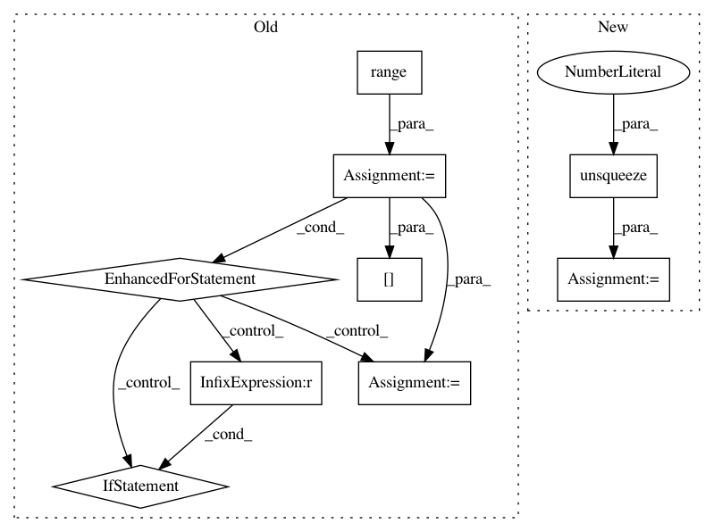

ba164c0dbb3d8171004380956a88431f4e8248ba,onmt/Models.py,Embeddings,make_positional_encodings,#Embeddings#Any#Any#,51
Before Change
def make_positional_encodings(self, dim, max_len):
pe = torch.zeros(max_len, 1, dim)
for i in range(dim):
for j in range(max_len):
k = float(j) / (10000.0 ** (2.0*i / float(dim)))
pe[j, 0, i] = math.cos(k) if i % 2 == 1 else math.sin(k)
return pe
def load_pretrained_vectors(self, emb_file):
if emb_file is not None:
After Change
return self.word_lut.embedding_dim
def make_positional_encodings(self, dim, max_len):
pe = torch.arange(0, max_len).unsqueeze(1).expand(max_len, dim)
div_term = 1 / torch.pow(10000, torch.arange(0, dim * 2, 2) / dim)
pe = pe * div_term.expand_as(pe)
pe[:, 0::2] = torch.sin(pe[:, 0::2])
pe[:, 1::2] = torch.cos(pe[:, 1::2])
return pe.unsqueeze(1)
In pattern: SUPERPATTERN
Frequency: 3
Non-data size: 9
Instances
Project Name: OpenNMT/OpenNMT-py
Commit Name: ba164c0dbb3d8171004380956a88431f4e8248ba
Time: 2017-08-01
Author: bpeters@coli.uni-saarland.de
File Name: onmt/Models.py
Class Name: Embeddings
Method Name: make_positional_encodings
Project Name: ixaxaar/pytorch-dnc
Commit Name: 51caa2e2cebe2e6e8c06ffbb918448dd2db011a7
Time: 2017-11-10
Author: root@ixaxaar.in
File Name: dnc/dnc.py
Class Name: DNC
Method Name: _layer_forward
Project Name: ixaxaar/pytorch-dnc
Commit Name: aa9592d811ad9765e06dd0e638e7cee9e5f4b00c
Time: 2017-11-10
Author: root@ixaxaar.in
File Name: dnc/dnc.py
Class Name: DNC
Method Name: _layer_forward